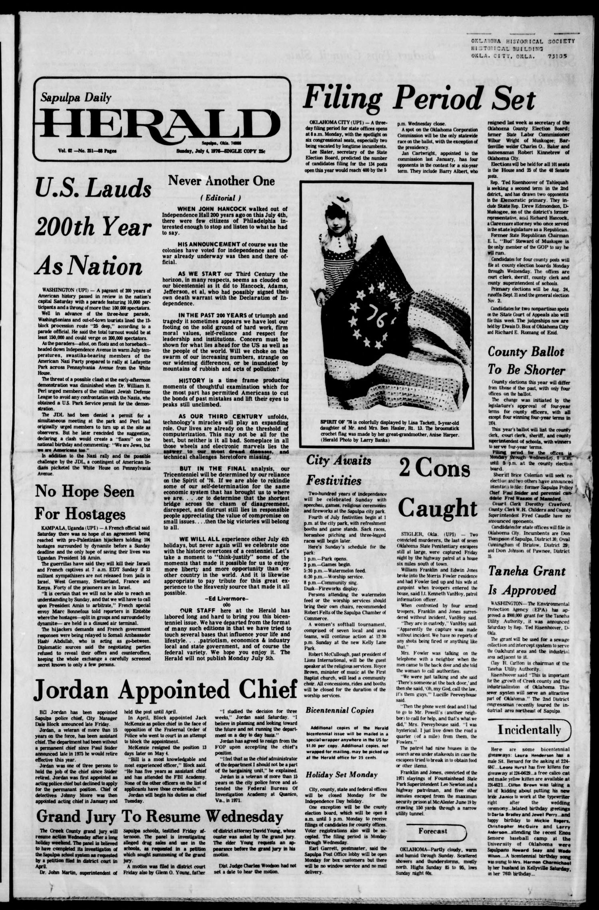
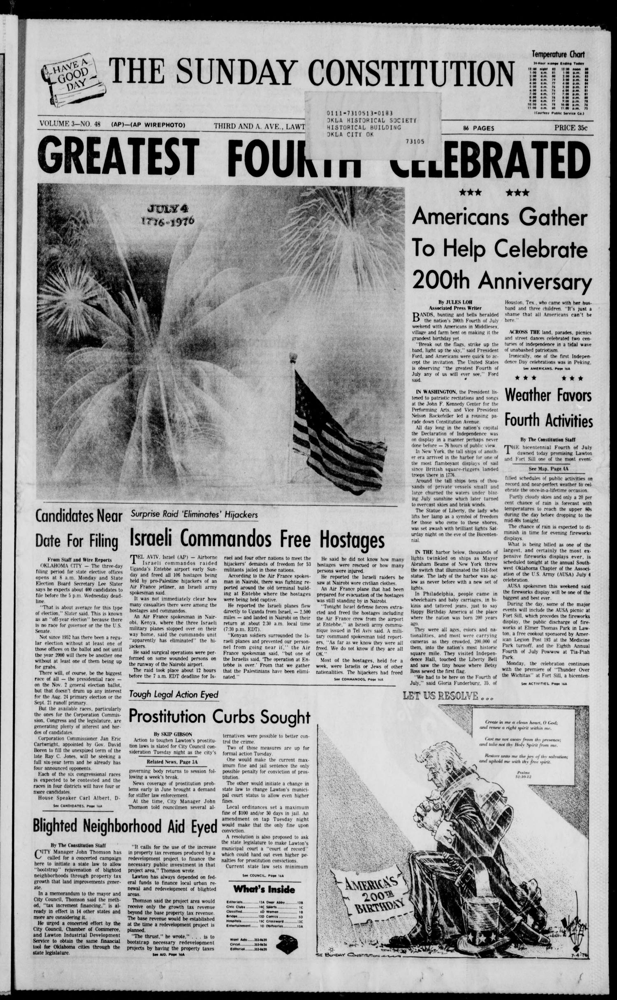
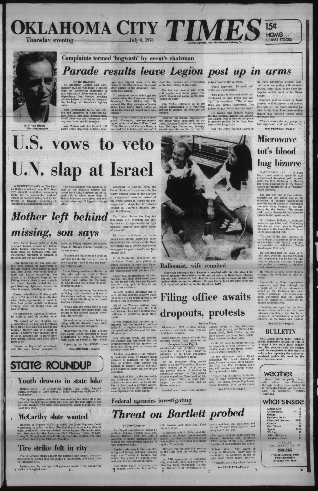
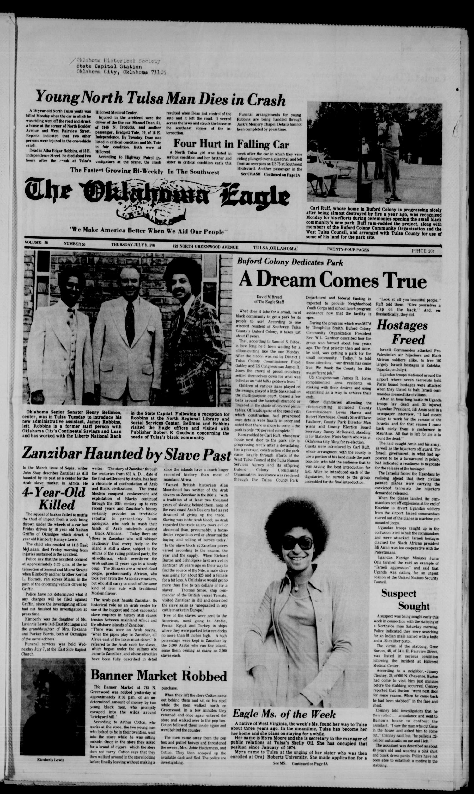

HN HN-706 · July 9, 1976 · War, Conflict & Security > Military Operations & Mobilization > Strategic operations
Source: Jewish Post, p. 15 — original page; U.S. State Department contemporary diplomatic history.
Report: A report headed “Israel Saves 100 Hostages†celebrated the airborne rescue in Uganda. It relayed radio reports of approximately 20 Ugandan soldiers killed and 32 wounded, as well as three hostages and one Israeli officer killed.
Assessment: Reported early totals and an explicitly approving newspaper perspective, not a completed investigation of casualties or every participant's identity. The July 4 Israeli operation followed an Air France hijacking; official diplomatic records establish the operation, but do not automatically validate each radio tally quoted in the article.
Authentic scans retrieved from Gateway to Oklahoma History (Oklahoma Historical Society). Article crops are located using the archive's own OCR word coordinates and rendered at native crop resolution; page scans are reduced-size access renditions. No images were generated, mocked, or retouched.




Not yet acquired. Queued for provider-specific acquisition testing (see source-acquisition manifest).
URL (preserved verbatim): https://newspapers.library.in.gov/?a=d&d=JPOST19760709-01.1.15
Saved research report: Historical_Newspaper_Event_Research_703-727_2026-10-23.md
Evidence note: A newspaper report means a historical publication made a claim; it does not establish that claim as fact. Contemporary reporting is separated from later scholarly context and our own assessment.